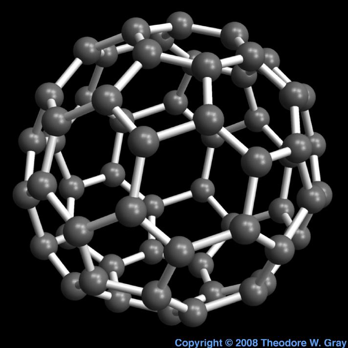
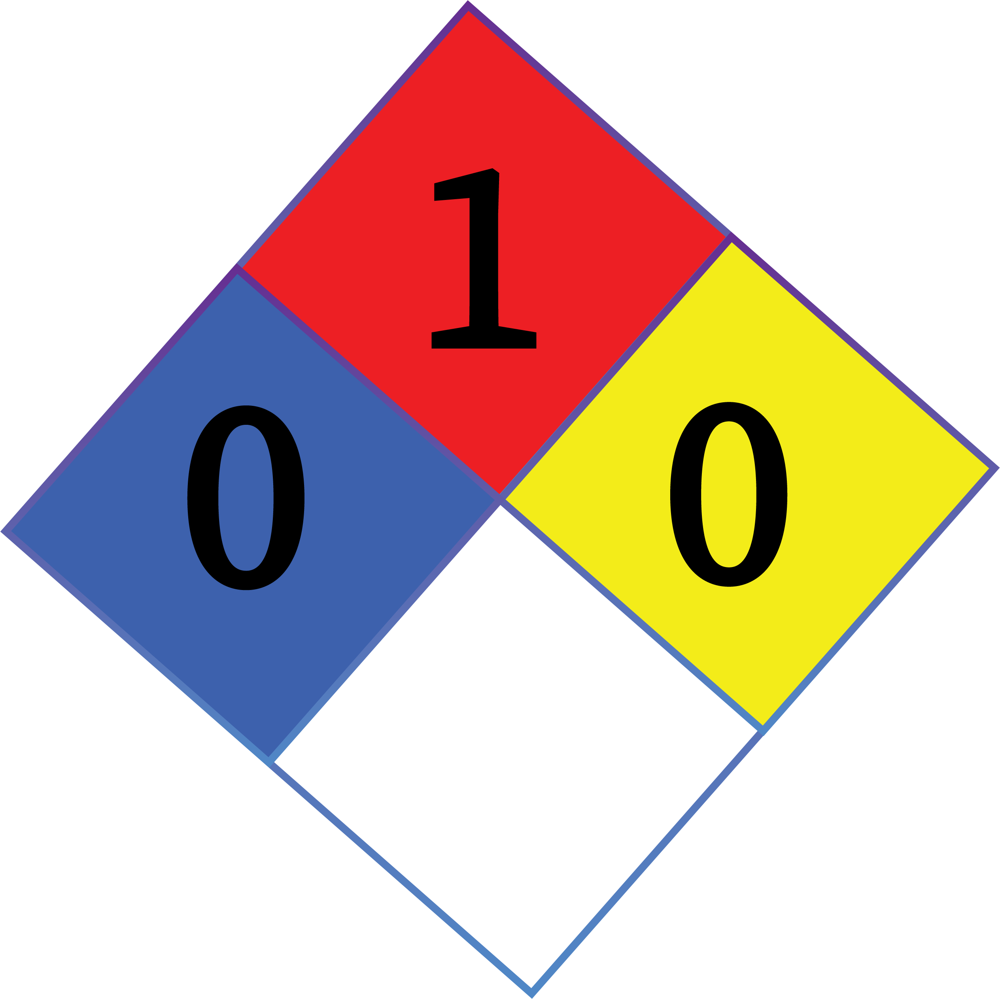

Element name and chemical symbol abbreviation
Carbon
C
6
Year of discovery
Carbon has no official date of discovery.
Properties of Carbon
| Type | Non-metal |
| Valence electrons | 4 |
| Period Number | 2 |
| Group number | 14 |
Photo of the element

Carbon Photo Credit: Theodore W. Gray, An example of the element Carbon
Look up and report the density of the material
The density of carbon is

Tennis Ball Photo Credit: https://pixabay.com/vectors/tennis-ball-tennis-ball-sports-146167/
Chemical hazard information

One interesting fact about the element
Carbon undergoes nuclear fusion reactions in heavy stars to make neon, magnesium and oxygen.
Thermodynamic standard state of the element
| C(s) (graphite) | 0 | 0 | 5.740 |
Specific heat capacity
Final temperature
Given
Formula
Answer
Atomic emission spectra
Another interesting fact
The carbon atoms in your body were all once part of the carbon dioxide fraction of the atmosphere.